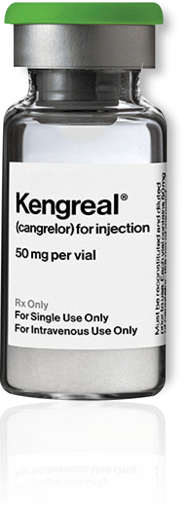

Dosing that is independent of age, renal function, or hepatic function¹

- Adjust KENGREAL® (cangrelor) dose based on patient weight to meet the recommended 30 μg/kg IV bolus and 4 μg/kg/min IV infusion
- Remove the bolus from the IV bag, never from the reconstituted vial
- Dose adjustment is not required in elderly patients (≥75 years) or in patients with renal or hepatic insufficiency
- Maintenance infusion should be continued for at least 2 hours or for the duration of the PCI, whichever is longer
- To maintain platelet inhibition after discontinuation of KENGREAL infusion, an oral P2Y12 platelet inhibitor should be administered